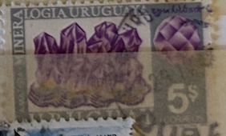
| SOURCE | TITLE| IMAGE MATCH | click to source page |
| rbnet.net | Gem, Rock, and Mineral Postage Stamps From Uruguay | 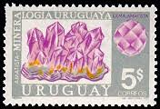 |
| Mineral Stamps | Uruguay | 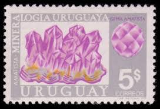 |
| Alamy | URUGUAY - CIRCA 1972: stamp printed by Uruguay, shows Jose Gervasio Artigas, circa 1972 Stock Photo - Alamy | 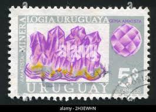 |
| Dreamstime.com | 681 Geology Message Stock Photos - Free & Royalty-Free Stock Photos from Dreamstime - Page 4 | 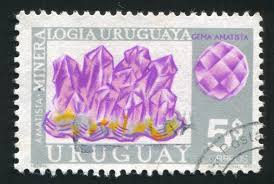 |
| Quarze und Mineralien | Quartzes and Minerals Stamps | 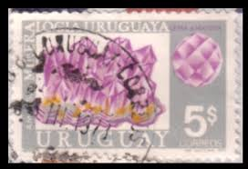 |
| Archivo Histórico Minero | AHM, Author at Archivo Histórico Minero - Página 38 de 48 | 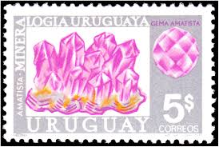 |
| Mercado Libre | Uruguay Año 1972 Yv 834 + 836 Mint Minerales | Envío gratis | 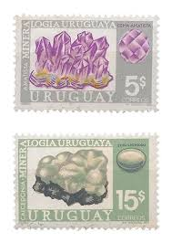 |
| Etsy | Vintage Postage || 5x Mineral Heritage: Amethyst 10c (1974) || Gray & Purple Square Stamp || Unused 1oz Wedding Postage - Etsy | 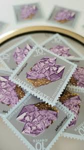 |
| Etsy | Amethyst Stamps - Etsy | 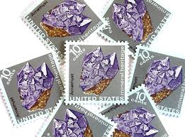 |
| Etsy | Buy 10 Vintage Unused Purple Amethyst Mail Stamps / Mineral Heritage USPS Postage / 10 Cents US Online in India - Etsy | 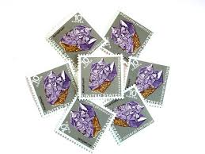 |
| TikTok | Rare Amethyst Postage Stamps for Sale - 1974 Collection | TikTok | 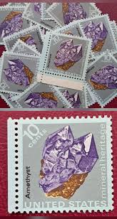 |
| Etsy | Amethyst Stamp - Etsy | 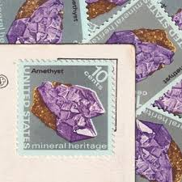 |
| Etsy | 10 Amethyst Mineral Heritage Stamps, 1974 Unused Postage Stamps, 10 Cent Stamps, Vintage Collectible Stamps - Etsy | 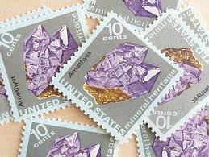 |
| HipStamp | New Zealand 1982 Sc#758, SG#1280 4c Purple Amethyst, Gems USED. | Australia & Oceania - New Zealand, General Issue Stamp / HipStamp | 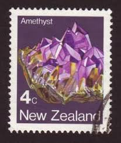 |
| Etsy | 10 Vintage Unused Purple Amethyst Mail Stamps / Mineral Heritage USPS Postage / 10 Cents US - Etsy | 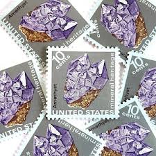 |
| eBay | 1541a BLOCK of 4 MINERIALS FDC LINCOLN, NE 1st LINCOLN STAMP CLUB CACHET | eBay | 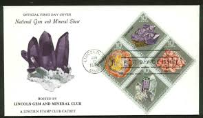 |
| iStock | German Democratic Republic Postage Stamp With Amethyst Stock Photo - Download Image Now - iStock | 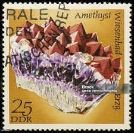 |
| Todocolección | rpdc 1995 exposición filatélica mundial finland - Acheter Timbres anciens de Corée sur todocoleccion | 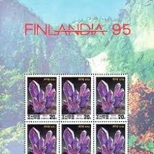 |
| Dreamstime.com | New Zealand on Postage Stamps Editorial Stock Image - Image of collection, vintage: 143059329 | 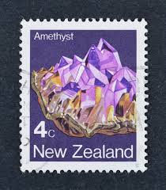 |
| Mystic Stamp | 1540 - 1974 10c Mineral Heritage: Amethyst - Mystic Stamp Company | 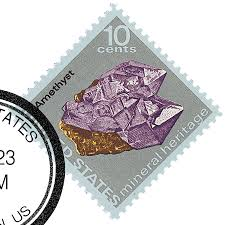 |
| CollectorBazar | Russia - Stone - NPPA4481 | 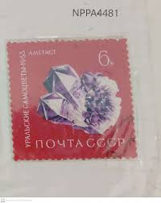 |
| Mineral Stamps | 1994 | 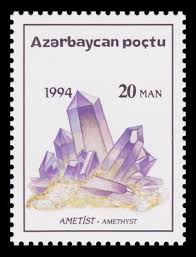 |
| Etsy | 12x Vintage Crystals, Gems and Rocks Stamps Postage Set of 12 Altered Paper Scrapbooking Junk Journal Paper - Etsy | 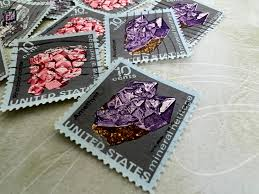 |
| Kenmore Stamp | 1539 - 10¢ Tourmaline | 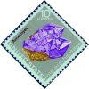 |
| Etsy | Mineral Heritage -US Mint Postage Stamps -10cent Face Value - Set of 4 -petrified Wood -tourmaline -amethyst- Rhodochro-1974issue-#1538-41 - Etsy | 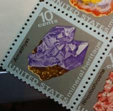 |
| eBay | (NZC97) 1982 NZ 4c minerals amethyst SG1280 | eBay Australia | 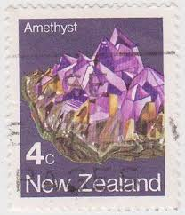 |
| Shutterstock | Blue Stamp Postal: Over 14,535 Royalty-Free Licensable Stock Photos | Shutterstock | 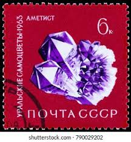 |
| 760 Soviet Union - CCCP Stamps ideas to save today | postage stamps, stamp collecting, stamp and more | 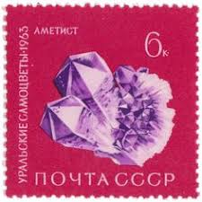 | |
| Dreamstime.com | Jewelery of Natural Pearls. Editorial Photography - Image of restinga, pearls: 98897057 | 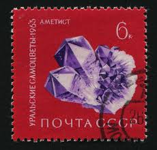 |
| U.S.A. Envio CTT, portes a cargo do comprador. 0.15€ cada. | 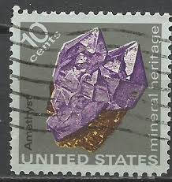 | |
| Shutterstock | 28+ Thousand 皇家郵件 Royalty-Free Images, Stock Photos & Pictures | Shutterstock | 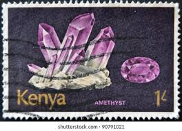 |
| Cindy Wolfsohn (wolfsn13) - Perfil | Pinterest | 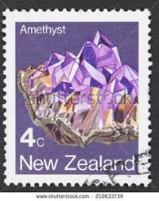 | |
| Shutterstock | 9+ Thousand Circa 1982 Royalty-Free Images, Stock Photos & Pictures | Shutterstock | 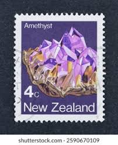 |
| OnlineStampShop | Mineral Heritage | 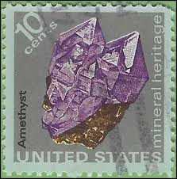 |
| Bardo Stamps | Modern U.S. Stamps: Scott 1538-1541; 1541a, 10c Mineral Heritage | 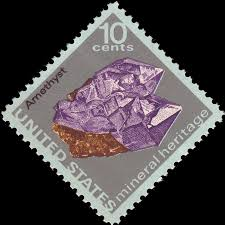 |
| Riaan Nel (riaan1310) – Profile | Pinterest | 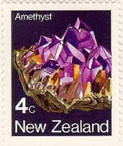 | |
| Etsy | 10 sellos de amatista, sellos sin usar de 1974, sellos de 10 centavos, sellos coleccionables antiguos - Etsy España | 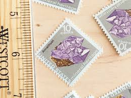 |
| Dreamstime.com | 176 Nonmetallic Material Stock Photos - Free & Royalty-Free Stock Photos from Dreamstime | 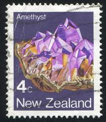 |
| HipStamp | Browse Listings in Europe / HipStamp | 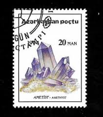 |
| Dreamstime.com | Natural Jewellery Editorial Images: Over 513 Stock Photos - Dreamstime | 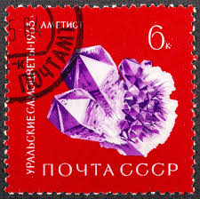 |
| eBay | STAMP US SCOTT 1540 "Mineral Heritage-Amethyst" 10 CENT 1974 USED FANCY CANCEL | eBay | 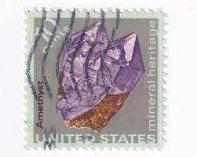 |
| Etsy | 10 postzegels minerale amethist, ongebruikte postzegels 1974, postzegels van 10 cent, vintage verzamelpostzegels - Etsy Nederland | 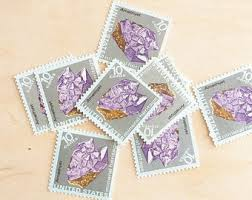 |
| KoalaStamps | KoalaStamps | Quality Stamps | Philately | 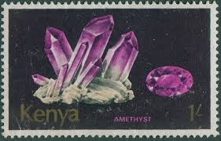 |
| rocodile.fr | Amethyste | 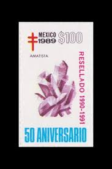 |
| Bizarre North Korean Stamp Collection • Lazer Horse | 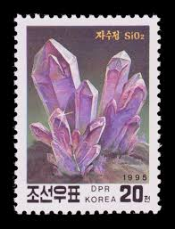 | |
| HipStamp | Search "amethyst" in Africa > Kenya / HipStamp | 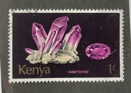 |
| eBay | 1540 * AMETHYST ** U.S. Postage Stamp MNH | eBay | 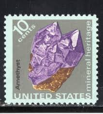 |
| Shutterstock | Kenya Circa 1977 Stamp Printed Kenya Stock Photo 111762299 | Shutterstock | 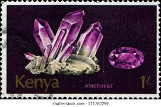 |
| jandrstamps.com | Minerals on stamps | JandR Stamps | 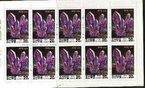 |
| Alamy | NEW ZEALAND - CIRCA 1982: stamp printed by New Zealand, shows Nephrite, circa 1982 Stock Photo - Alamy | |
| iStock | Closeup Postage Stamp Kenya Stock Photo - Download Image Now - Abstract, Black Background, Black Color - iStock | |
| eBay UK | Solomon Islands 2015 / Minerals - Smoky Quartz / 1v ms | eBay UK | |
| Shutterstock | Kenya Stamps: Over 900 Royalty-Free Licensable Stock Photos | Shutterstock | |
| Wikimedia.org | File:Stamp of Azerbaijan - 1994 - Colnect 231322 - Amethyst.jpeg - Wikimedia Commons | |
| Alamy | Poctu hi-res stock photography and images - Alamy | |
| Bookpress | Σπάνιες γαίες | |
| Alamy | Postage stamp from Kenya in the Minerals series issued in 1977 Stock Photo - Alamy | |
| Alamy | Ural stone hi-res stock photography and images - Page 2 - Alamy | |
| eBay UK | Scott # 1540...10 Cent...Minerals...Amethyst...4 Stamps | eBay UK | |
| CareUK Living | United States Postal Service Complete US Commemorative Stamps Issued In 1953 And 1954 Mint, - Want It All Complete Stamp |
{kind=link}